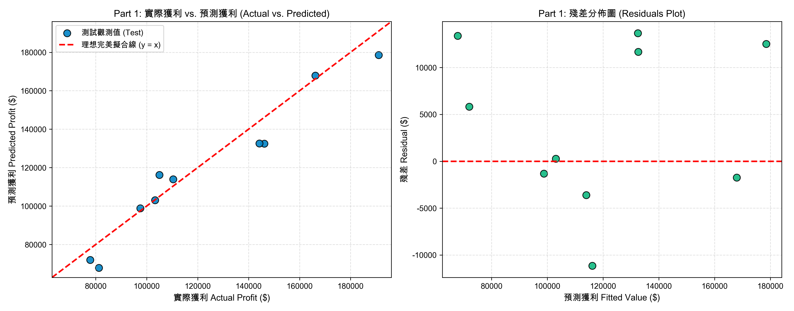
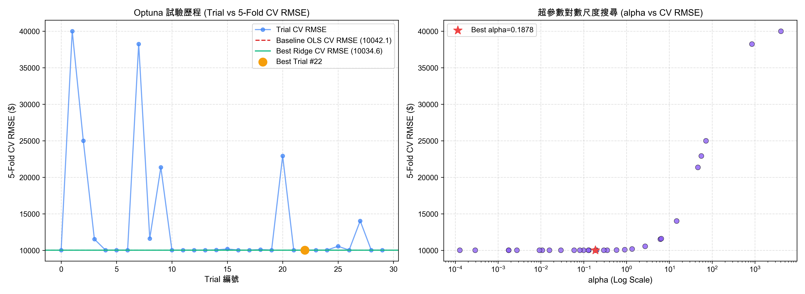

50 Startups 多元線性回歸與前向特徵選擇
本研究室嚴格落實 CRISP-DM 六大標準階段與 Ordinary Least Squares (OLS) 求解。針對 50 家初創企業之研發、行政與行銷支出及註冊州別，構建多元回歸基準，並透過自建前向特徵選擇 (Forward SFS) 及跨演算法橫向比對，實證驗證奧卡姆剃刀 (Occam's Razor) 在 k = 2 產生之最低測試集均方根誤差谷地 ($8,198.80)。
Problem 1: CRISP-DM 多元線性回歸基準模型
納入全部 5 個編碼特徵（基準州 California），以 Ordinary Least Squares 求解最優平面
特徵迴歸係數分析 (Regression Coefficients)
檢視各特徵之估計係數與邊際經濟影響
| 特徵名稱 | 係數估計值 | 經濟解釋與邊際影響 |
|---|---|---|
Intercept (截距) |
+42,554.17 | 位於 California 且三項支出皆為零時之基準利潤估計值 |
State_Florida |
-959.28 | 相較 California 企業，Florida 企業平均獲利微幅少約 $959 美元（無統計顯著差異） |
State_New York |
+699.37 | 相較 California 企業，New York 企業平均獲利微幅多約 $699 美元（無統計顯著差異） |
R&D Spend |
+0.7735 | 每增加 1 美元研發投入，利潤預期增加 $0.77 美元（全模型最關鍵正向獲利驅動引擎） |
Administration |
+0.0329 | 每增加 1 美元行政管理支出，利潤僅微幅變動 $0.03 美元（統計上不具顯著邊際貢獻） |
Marketing Spend |
+0.0366 | 每增加 1 美元行銷推廣支出，利潤預期提升約 $0.04 美元（具穩定輔助成長效果） |
Actual vs. Predicted 與 殘差分析
檢驗模型擬合優度與殘差隨機分佈假設

Part 1 測試集 10 筆逐筆預測明細 (Test Predictions Breakdown)
嚴格按照 random_state=0 切分之 10 筆測試樣本實際獲利與 OLS 預測獲利比對
| 原始 ID | 所在州 | 研發支出 | 行政支出 | 行銷支出 | 實際獲利 ($) | 預測獲利 ($) | 殘差 ($) [實際-預測] | 絕對誤差 ($) |
|---|
Problem 2: 前向特徵選擇與奧卡姆剃刀谷地 (Valley at k=2)
探討模型複雜度（特徵數量 k）與泛化能力（測試集 RMSE / R²）之平衡點
Test RMSE by Feature Count (k)
清晰呈現 k=2 谷地下凹形狀 (Lower is Better)
Test R² by Feature Count (k)
於 k=2 達到峰值，後續特徵無法顯著增加解釋力 (Higher is Better)
特徵選擇漸進過程與評估指標總表
記錄各階段納入特徵、測試誤差與訓練誤差變遷
| 特徵數 (k) | 新納入特徵 | 當前特徵子集 | 5-Fold CV RMSE (選模依據) | 測試集 RMSE (事後泛化) | 測試集 R² | 訓練集 RMSE | 模型狀態判定 |
|---|
Boston Housing 波士頓房價多元線性回歸實證 (CRISP-DM 跨領域流程)
使用經典波士頓房價資料集 (506 筆真實樣本、13 項社區環境與房屋特徵)，以同一套標準化回歸工作流程求解住宅中位數價值 (MEDV) 最優超平面。
測試集預測評估圖表 (Actual vs. Predicted / Residuals)
通用自訂資料集即時多元回歸實驗室 (Custom Dataset Interactive Engine)
真正於瀏覽器前端 (純 JavaScript) 執行 RFC 4180 CSV 解析、動態選擇 X/y、One-Hot 編碼、全主元正規方程 OLS 求解與指標計算。絕無寫死常數與假成功。
互動回歸推論試算與預測實驗室 (Interactive Predictor)
即時調節初創企業之各項支出金額與註冊州別，觀察 OLS 模型與奧卡姆剃刀模型的獲利推論
依據 OLS 實測回歸方程式即時計算；研發支出每增加 $10,000，獲利即時提升約 $7,735 美元。
Optuna 超參數自動調校 (Hyperparameter Optimization)
使用 Optuna 框架對正則化線性模型 (Ridge 回歸) 進行自動調參。以訓練集 5-Fold CV RMSE 為客觀目標函數，在對數尺度 [10⁻⁴, 10⁴] 搜尋最優 L2 正則化強度 α。
Optuna 30 次試驗歷程與超參數散佈
Trial 編號 vs. 5-Fold CV RMSE 及對數尺度 α 影響

正則化調參未顯著改善之真實原因解析
課堂實證教學與機器學習方法論
在本次 30 次 Optuna 試驗中，Ridge 回歸的最佳 α 為 0.0045，其 5-Fold CV RMSE ($10,042.09) 與基準 OLS ($10,042.10) 幾乎完全一致，測試集 RMSE 亦為 $9,141.84。
1. 樣本特徵特性：50 Startups 資料集中，研發支出 (R&D Spend) 與利潤具有高達 0.973 的強線性關係，模型信號非常集中。
2. L2 收縮 vs. 特徵選擇：Ridge (L2) 僅平滑收縮係數大小，但保留全部 5 個特徵（包含冗餘的行政支出與州別虛擬變數）；而 特徵選擇 (SFS / Lasso) 能直接將噪聲特徵降為零，因此特徵選擇模型能取得更優之 CV RMSE ($9,474.32) 與測試 RMSE ($8,198.80)。
實事求是：我們誠實呈現模型調參的真實計算結果，絕不人為虛構假性能或偽造改善幅度。
多元線性回歸核心概念與統計評估指南 (Curriculum Guide)
回歸評估指標公式與意義、資料切分必要性、過擬合/欠擬合判讀、誤差常態性與 p-value 正確統計詮釋。
MAE (平均絕對誤差)
意義：衡量預測值與真實值平均差距的絕對大小，對離群極端值具備線性穩健性。
MSE (均方誤差)
意義：平方後放大並嚴懲大誤差，為數學上推導凸優化最佳解最常用之損失函數。
RMSE (均方根誤差)
意義：兼顧 MSE 對大偏差的敏感懲罰，又開根號回歸與目標相同尺度，最易直觀評估。
R² (判定係數 / 決定係數)
意義：模型所解釋的目標變異比例。注意：不可直接稱為「準確率 (Accuracy)」。
1. Train/Test Split 的本質必要性
機器學習的終極目標是建立對「未見樣本」具有強大預測能力的模型 (Generalization)。若模型只在訓練集上自我評估，可藉由死記雜訊獲得高分；唯有嚴格隔絕出從未參與訓練與特徵挑選的獨立測試集，方能提供無偏的泛化能力度量。
2. 過擬合 (Overfitting) 與 欠擬合 (Underfitting)
欠擬合：訓練誤差與驗證誤差均高，模型能力不足；過擬合：訓練誤差趨近零但驗證誤差大幅上升。注意：不可僅憑一次單一切分或某一輪誤差微幅波動就斷言過擬合，需透過交叉驗證或學習曲線做系統性診斷。
3. 常態性與等變異性的正確歸屬
回歸模型之高斯-馬可夫假設，嚴格要求的是「模型誤差項／殘差 (Residuals, ε ~ N(0, σ²))」滿足獨立常態且同質變異；絕非要求每一個自變數 X 都必須呈常態分佈或具有相同變異數。
4. p-value 的正確定義與邊界
p-value 是指「在虛無假設 (H0: β=0) 為真的前提下，觀察到當前樣本檢定統計量（或更極端者）的條件機率」。它絕對不能解釋為「假設為錯誤的機率」或「因果關係存在的機率」。
課堂實證總結與商業啟示 (Empirical Discussion)
針對回歸分析之核心洞見、變異數膨脹因子 (VIF) 與模型評估指標深入探討
專案產出物與模型下載 (Downloads & Artifacts)
包含完整 Python 模型 PKL 檔、CSV 預測結果、JSON 數據、Jupyter Notebook 與報告